16 Working with GitHub
GitHub is primarily a software development platform but it is very useful as well for other projects that require intensive cooperation and/or version control.
GitHub uses the distributed version-control system Git (https://en.wikipedia.org/wiki/Git) for keeping track of changes to files on each of the different developers’ machines. GitHub also offers additional features that facilitate collaboration within the core team, collaboration with outside contributors and interaction with users.
16.1 Why use a version control system?
(adapted from https://swcarpentry.github.io/git-novice/01-basics/index.html )

Even if working alone, you quickly run into multiple versions of the same document. This problem is compounded when working in a team.
Version control systems start with a base version of the document and then record changes you make each step of the way. You can think of it as a recording of your progress: you can rewind to start at the base document and play back each change you made, eventually arriving at your more recent version.
Once you think of changes as separate from the document itself, you can then think about “playing back” different sets of changes on the base document, ultimately resulting in different versions of that document. For example, two users can make independent sets of changes on the same document.

Unless multiple users make changes to the same section of the document - a conflict - you can incorporate two sets of changes into the same base document.

A version control system is a tool that keeps track of these changes for us, effectively creating different versions of our files. It allows us to decide which changes will be made to the next version (each record of these changes is called a commit), and keeps useful metadata about them. The complete history of commits for a particular project and their metadata make up a repository. Repositories can be kept in sync across different computers, facilitating collaboration among different people.
GitHub uses the version-control system Git
(https://en.wikipedia.org/wiki/Git).
Git is called a “distributed” version-control system because the change
history of a repository is maintained not only on a central server, but
also in each copy of the repository (we will see later that these changes
are located in a folder called .git at the root of the repository).
16.2 Installing Git
16.2.1 On Windows
(instructions from https://www.pluralsight.com/guides/using-git-and-github-on-windows)
Download Git for windows here: https://gitforwindows.org/
Execute the downloaded file. A few notes on the options you will be given during the installation process:
In the page Select Components you can leave the options at their defaults.
The Windows Explorer integration > Context menu entries option allows opening the Git command prompt (Git Bash) from any folder by clicking with the right mouse button on the folder and selecting Git Bash Here. The last option is also interesting in that it installs a better font for all console windows.
On the next screen (Adjusting your path environment), choose the most conservative option: Use Git Bash only. This will make git commands available only in Git Bash and will not alter your PATH variable. Click Next.
Another important setting: line endings. As you may know, Windows and Unix systems (Linux, Mac) have different formats of line breaks on text files. If you write a file with Windows line breaks, another person may have problems opening that file in Linux and vice-versa. The line endings setting allows you to normalize this. Choosing the second option (Checkout as-is, commit Unix-style line endings), that won't change the line breaks when the file arrives but will convert them to Unix-style when you commit. That way, you don't risk committing Windows-style line breaks and everything is kept in Unix-style. Don't worry, even though you are in Windows, most of the text editors can read Unix line breaks just fine.
After that one more Next, Finish, and Git is installed!
16.2.2 On Mac
(instructions from https://www.atlassian.com/git/tutorials/install-git)
Download Git for Mac here: https://sourceforge.net/projects/git-osx-installer/files/
Follow the prompts to install Git.
16.2.3 On Linux
(instructions from https://www.atlassian.com/git/tutorials/install-git#linux)
From your shell, install Git using apt-get:
$ sudo apt-get update
$ sudo apt-get install git16.3 Introducing your main git tool: Git Bash
16.3.1 On Windows
We interact with Git through a program called Git Bash, which was installed together with Git in the step above. Git Bash is a command line program, which means you interact with it not by clicking buttons with your mouse but by writing commands. Only the thought of this may repulse many humanities scholars, but fear not: it is easy to learn, and we need only very few commands.
To open Git Bash, right-click on a folder in Windows Explorer, and choose “Git Bash here”
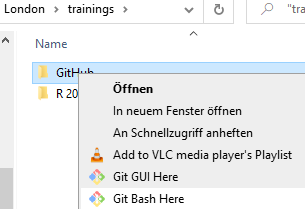
This will open the program:

16.3.2 On Mac
If you are a Mac user, you are probably familiar with the standard Mac command line tool, Terminal. You can use Terminal to interact with Git, or install a dedicated command line tool for Git, called Git Bash:
To open Terminal, do one of the following:
Click the Launchpad icon
 in the Dock, type “Terminal” in the
search field, then click “Terminal”.
in the Dock, type “Terminal” in the
search field, then click “Terminal”.In the Finder
 , open the
, open the /Applications/Utilitiesfolder, then double-click “Terminal”.
To install Git Bash: download it from here: https://downloads.digitaltrends.com/git/mac
16.3.3 On Linux
If you’re using Linux, you don’t have to download the Git Bash program; you can use the normal terminal to interact with Git.
To launch the shell, use the keyboard shortcut Ctrl-Alt-T.
You can use all
normal Linux commands (cd, ls, …), in addition to a number of
additional git commands that will be explained below.
16.4 Absolute minimum knowledge of command line commands
NB: to learn anything from a tutorial, you have to do all the steps yourself, not just read it! Also, type the commands yourself, do not simply copy them, you will learn much faster this way.
There are basically two main ways to interact with a computer. The one you are probably most familiar with, is through a graphical user interface (GUI), in which different programs are represented by graphical icons, on which you can click with your mouse to open them - that is, the way we usually interact with a computer. The other way is through a command-line interface (CLI), which uses only text to interact with a computer: instead of clicking on different icons on the screen with a mouse to tell the computer what to do, you use the keyboard to write the commands to the computer directly.
Even though most modern computers mainly use a graphical user interface (GUI), each also has a program that allows you to interact with the computer through text commands. Such a program is known by many names: “terminal”, “command line”, “command prompt”, “shell”.
To interact with GitHub, we will use such a command-line interface: on Windows, you can use Git Bash; on Mac, you can use Terminal (or Git Bash); and on Linux the standard Linux terminal. For instructions on how to install/open these, see the previous section.
In this tutorial, we will be using Git Bash. If you use a different program, it might look slightly different, but it should still be recognizable, and the commands you have to enter are the same.
- Open the command line shell of your choice. this is what it should look like: basically, a black (or white) window, with some text at the top.
GitBash on Windows
MacOS BigSur Terminal

Linux Ubuntu terminal
The displayed text on your machine will be different than in the image here: it contains:
- basic information on your computer and the user who is logged in:
<user>@<system>(in the images above:peter@Desktop-sRKSSV6,bigsur@Andrews-MacBook-Pro,mark@linux-desktop) - information on your location in your computer system
(in the images above:
/d/London/trainings/GitHub,~and~;~refers to the home directory on Mac and Linux computers) - the prompt: a symbol that shows that the shell is ready to accept your commands
(in the images above:
$,%and$; the exact symbol differs depending on the program and/or the user account type (normal user, administrator) that is logged in) - the cursor: a blinking bar or rectangle that shows the position where a character will appear when you hit a key on your keyboard.
NB: this whole line (in the Windows example, two lines) is usually called the command prompt, or simply prompt.
IMPORTANT In this tutorial, we will include the dollar sign before every line that should be executed in Git Bash; you don’t have to write it in Git Bash when copying commands from this tutorial.
- Write your first command: type
pwd, which means “print working directory”:
$ pwd(remember not to type the prompt symbol $!)
- Press the “Enter” key to execute the command. A line that contains the path to your current folder will appear, and beneath it, a new command prompt:

NB: to know what this path means, please go on to read the next section.
In general, you will always have to hit enter to execute a command, and any output from the command will be printed to the line(s) below the line on which you wrote your command. When the computer is ready executing your command, a new prompt will appear, signalling that it is ready to execute a new command.
16.4.1 The filesystem: an introduction
Each computer has a system to organize all the files in it; this is called its filesystem. Files are usually kept in logical groups, which are called “directories” or “folders” - think of the cardboard folders in which you store paper files.
A physical library is organized in a way that facilitates retrieving a book:
this makes it easy for a user to go and fetch a book if she
knows it is stored in room 2.03 on the second floor of the building, in book
case number 8, on the third shelf. The filesystem in a computer is organized in
a similar hierarchical way. Each file is contained in a directory, which is itself
contained in another directory (called its parent), and so on until it reaches
the root directory, which contains all other directories. The image is that of
a tree, where each directory is a branch, and each file a leaf. There is a unique
path that describes the way from the root directory to any directory or file
in the filesystem.
The shell knows in which directory it is currently located; this is called its
“working directory”. Any command you write in the shell will be executed in
the shell’s current directory; for example, if you write a command to create
a new file (the command to do create a file called “my_file.txt” touch my_file.txt),
this file will be created in the current working directory.
The pwd command shows the path to that directory from the root directory.
In the example above, the root directory is symbolized by the first forward
slash /; the following slashes in the path delineate directory names.
The GitHub folder is located within a directory called trainings,
which in turn is located in a folder called London, which in turn is located in
the d directory in the root folder of my computer.
The path /d/London/trainings/GitHub tells the computer it can find the GitHub
folder by opening the d directory in the root folder, then the London folder
in the d directory, then trainings folder inside that London folder.
16.4.2 Moving from one directory to another: the cd command
We can use the command cd (for “change directory”) to move to another folder.
For this first exercise, we are going to move from our current working directory
to the root folder, and then move our way back up to the original working directory.
- First use the command
pwdto print your current working directory, so that we know the full path to our current working directory and can get back to it later:
$ pwd
/d/London/trainings/GitHub(again, don’t include the $ symbol in your command - it symbolizes the prompt!)
NB: the output on your computer will of course be different, as it depends on the file structure on your computer and your current location within it!
- To move to the root folder, you can use this command:
$ cd /- if you enter the
pwdcommand again, it will now show only the forward slash that symbolises the root directory:
$ pwd
/The working directory is also reflected in the prompt itself:

(the exact way how this is represented in the prompt will differ from system to system)
- Let’s start moving back in the direction of our original working folder
(in my case,
/d/London/trainings/GitHub; in your case, the path that was printed in step 1). Let’s go step by step: first writecd, followed by a space, followed by the first directory in the path (in my case,d) - you may choose to include the slash after the directory name or not; press the Enter key. Repeat for the next directory:cd+ the next directory in the path (in my case,London), and Enter:

- You can also take larger steps, by stringing directories together with forward
slashes, as in the path we printed with the
pwdcommand. Since we are currently in theLondonfolder, we can write the following command to reach theGitHubfolder:

- To move to the
parentfolder (that is, the folder that contains the current working directory, the folder immediately before the working directory in the path): use the commandcd ..:

16.4.3 More navigation in the command line: the ls command
- To list all files and folders in the current working directory, use the command
ls(for “list”).
This will display all files and folders in the current working directory. You can use this information to move into one of these folders.
- You can also list the contents of another directory than the working directory,
by adding the path to that directory after
ls. For example, if we want to list the contents of theGitHubfolder while we are in thetrainingsfolder, we can write:
NB: note that Git Bash displays folders in blue (followed by a forward slash), and files in white. Note also the quotation marks around the file name; they are there because the file name contains a space. If any folder or file name in a path contains a space, you will have to use quotation marks around it.
- Similarly, we can list the contents of the
rootfolder from anywhere in the filesystem tree (in this example, again from thetrainingsfolder):

- … Or use the full path to any folder:
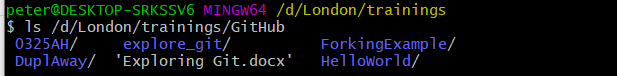
16.4.4 Using autocomplete
Most (all?) command line programs provide an autocomplete functionality.
You can write part of a folder or file name and press the Tab key on your
keyboard, and the program will try to complete the folder/file name.
For an example, I will cd into the root directory (cd /). If we want to return
to the GitHub folder, we can type cd d/Lon, and hit Tab; the program will
autocomplete to cd d/London/, because there is no other file or folder in
the directory d that starts with Lon. We can then continue typing trai,
and hit Tab again to autocomplete to cd d/London/trainings. I can then type Gi
followed by Tab to autocomplete to cd d/London/trainings/GitHub.

16.5 Essential GitHub commands
We will be covering the following commands during this tutorial:
git clone
git status
git add
git commit
git push
git pull
git remote addThese few commands will be enough to do most of your work on GitHub. That’s not too bad, is it?
16.6 Creating your first GitHub repository
A repository is a folder that contains a git project. You will create a repository for each project you are starting.
Go to GitHub.com.
If you don’t have a GitHub account yet, create one now by
clicking the sign up button and go through the sign up process.
To finalize the process, you have to click a link sent to the email address
you used to set up the GitHub account
Log in to your account by clicking the Sign in button in the top right of the window.
Once you’re signed in, you’ll see an automatically created personal avatar in the top right of the window;if you click on it, you’ll see your user name and a couple of links:
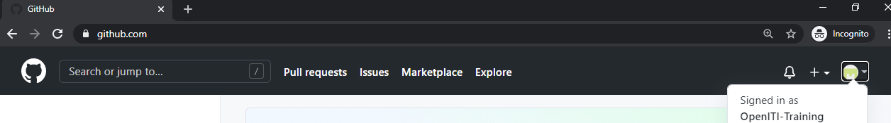
Create a repository by clicking the plus sign next to your avatar, and selecting “New repository” from the dropdown list:
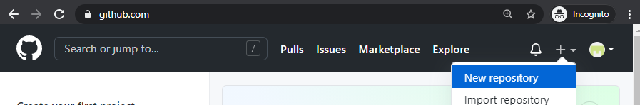
Give your repository a new name. It is a tradition in computer programming to call your first project “Hello World”. GitHub does not allow spaces in repository names, so let’s call ours “HelloWorld”. Also add a short description.

GitHub gives you a couple of additional options: the repository can be either public (meaning, anyone on the internet can see it, but you can decide who can make changes to it) or private (meaning it is invisible, but you can invite specific people to view your repo and participate in it).
GitHub also offers you to create your repository with some files included from the start: a README file explaining what this project is about, a .gitignore file (which describes which files should never be copied when downloading and uploading to GitHub - more on this later), and a license (which describes how people can use your project - copyright-wise).
Let’s create the repository without any of these files, and click the green “Create Repository” button.
When the repository is created, you arrive at a landing page, which explains very shortly what the next steps could be:
- manually create a new file in the repository
- upload an existing file to the repository
- connect your new repository to a folder on your local computer
- use the command line to add data from an existing folder on your local machine to this git repository
- import code from another repository
We’ll use the first option and create a README file: click the “creating a new file” link in the “Quick setup” section of the landing page:

Give a name to the file: we’ll call it README.md:
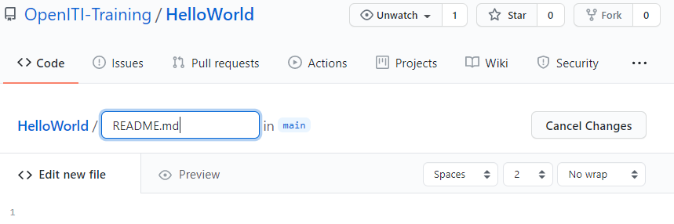
NB: .md is the extension for markdown files.
Markdown is a lightweight markup language that allows you to format a text with
title headings, bold, italics, etc. using a small amount of special characters.
See a cheatsheet with an overview of the syntax elements here:
https://www.markdownguide.org/cheat-sheet/.
It is a very useful format for writing things for the internet - this tutorial was also written in markdown.
Let’s write some markdown text in the README.md file:
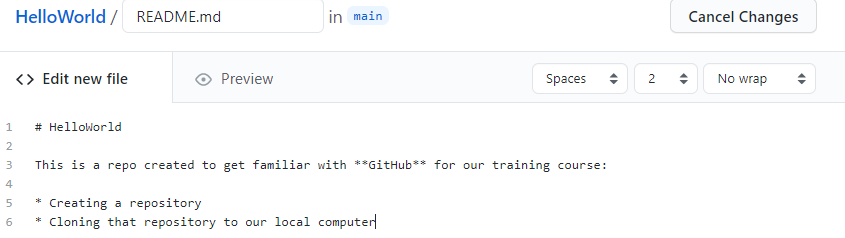
If you click the Preview button, you can see the effect of the special characters
# (first-level header), **...** (bold) and * (unordered list) is:

At the bottom of the page (you may have to scroll down) you will find a message
box titled “Commit new file”. Commit is an important git command: every change
you make in a git repository will be saved with a short descriptive title (“commit message”)
for later reference, so that other users (or yourself) can go through the history
of changes and roll back changes if necessary.
The commit message is usually a very short message (about 50 characters), in the imperative form. You can write it in the smallest of the two input fields. You will see that GitHub has already provided you with a proposal for your first commit message: “Create README.md” You can also add a more extensive description in the larger input field; this is optional.

In order to save our changes, we have to click the green “Commit new file” button.
That’s it, you have created your first GitHub repository with your first README file, and you made your first commit!
If you want to edit the README.MD file, you can click the pencil icon:
Don’t forget to write a new commit message and click the Commit new file button
if you have edited the text of the README file!
You can see the history of our commits by clicking the History button under
the green “Code” button:

This will show you all changes (commits) in the repository, from newest to oldest:

16.7 Cloning: downloading a GitHub repository
Now that we have created our first GitHub repository, let’s download it to our personal computer, and make some more changes there. The process of downloading a repository from GitHub on your local computer is called “cloning”. Remember, every local copy of a git repository contains the entire history of the repository, and is thus effectively a clone of the repository.
Go to the page of the repository you want to clone on GitHub, and click the
green Code button. This will open a dropdown, which contains - among other
things - a download link (usually, it will be the address of the GitHub page,
with a “.git” extension appended to it). Click the clipboard icon next to that
link to copy the link to your clipboard.

Open the command line program you use for git (Git Bash, Terminal, Linux shell
- see above for instructions)
and navigate to the folder where you want to save a copy of our HelloWorld repo.
I will save it in my d/London/trainings/GitHub folder; you will have to use the
cd command with the path to a folder in your file system instead
(see above for more info on the file system and paths and on the
cd command)
Write the following command: git clone and paste the link from the clipboard,
and hit enter. In the case of the repo we created in the previous section, this
would be
$ git clone https://github.com/OpenITI-Training/HelloWorld.gitNB: in Git Bash on Windows, you cannot use the normal shortcut for pasting
(ctrl+v); use shift+insert (or right-click, and choose Paste) instead.
The program will print a number of lines to the screen, detailing its progress:
Congratulations, you cloned your first repository!
Let’s navigate into the folder, and let’s see what is in there. Use the command
cd HelloWorld to move into the HelloWorld folder, and then write the command
ls -la to list all files in that folder (you already know the
ls command;
the characters -la at the end are so-called “flags” that change the behaviour
of the command: -l tells the program to list some details about each element
in the folder, and -a to include all files, including those that start with .).

The last item is probably the only one you expected: the README.md file we
created on the GitHub page. The first two items in the list refer to the
current folder (.), and its parent folder, that is, the folder that contains
the current folder (.., remember the cd .. command).
The most important item in the list is the .git folder; this folder contains
the entire history of the repository.
16.8 Save your changes: add and commit
Now that we have cloned our GitHub repository, we can work with it: add new files and folders, make changes to existing files or delete them altogether.
Whenever you have made a change to your local repo, you have to notify Git that you did so. It is the Git equivalent of using “save as”. Git stores changes you made under the form of files known as “commits”; each commit has a unique id number, and a label (“commit message”) that describes in about 50 characters what changed to the repository when this commit was made. This allows a user to go back in the history of the repository, for example to return to earlier versions of a file.
Make a change in the README.md file, using Kate editor. Make sure to save and close the file after you finished changing it.
NB: You can open Windows Explorer in the current directory from Git Bash using the following command:
$ explorer .On Mac, use
open .instead to open Finder in the current directory.In Git Bash on your computer, use the
cdcommand to move into your local repository:$ cd d/London/trainings/HelloWorldNB: use the path to the folder where you stored your HelloWorld repo, which will be different from the one shown here!
You can use the command
git statusto make Git check which files in your local repository have undergone changes:$ git statusIf no changes occurred, you will get the following message:
On branch master Your branch is up to date with \'origin/master\'. nothing to commit, working tree cleanIf you have made changes, Git will return a list of the files that have been changed (or added/deleted):

For this example, we have changed the README.md file. Git displays it in red to show that the changes to this file have not yet been stored in Git.
We will now commit our changes to git, which will save them in the
.gitfolder on our computer. A commit is like a box in which changes are saved. First you have to add the changes to the box using thegit addcommand, followed by the path to the file you changed - in our case, simply:$ git add README.mdIf you use the “git status” command again, you will see that the file we changed is now displayed in green: the changes are in the commit box, ready to be committed to the storage system.

Using the command
git commit, we will commit our changes to the storage system. For later reference, we have to add a “commit message”: a label to the commit box, so to say, that should help other users to understand the changes you made to the file without having to compare both files. The commit message should be introduced with the flag-m(for “message”), and be placed between (single or double) quotation marks:
This is equivalent to hitting the green
Commitbutton on the GitHub websiteNB: a good commit message should be around 50 characters long, be descriptive, and in the imperative mood: the idea is that when you go through the history of changes made to a repo from the start, you can read the commit message as “when you execute this commit, Git will…”
Your changes have now been included in the change history. You can view the change history with the command
git log: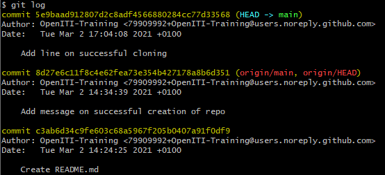
This gives you a list of all changes (commits) made to the repository, from the most recent to the oldest. As you can see, every commit has a unique 40-character ID that can be used to go back to the state of the repository when this commit was made. The log also lists the author and date of every commit, plus its commit message.
NB: if the number of commits exceeds the Git Bash window, the log will open in an editor within Git Bash. You can use the
UPandDOWNarrows on your keyboard to navigate through this history. To quit the log, type “q” after the colon at the bottom of the window.
16.9 Publish your changes: push changes
Now you have committed your changes in your local Git repo, but if you go to your personal GitHub page, you will see that the changes you made in your local repository are not present there.
The online repository on your GitHub page (your “remote” repository in Git-speak) is not automatically updated when you add and commit to your “local” repo.
In order to update the remote repository, we will have to “push” our changes to GitHub.
In Git Bash on your computer, use the
cdcommand to move into your local repository if you were not in it already:$ cd D:/London/trainings/GitHub/HelloWorldUse the command
git push origin mainto push your changes to your fork on your personal GitHub page:$ git push origin mainNB:
originis the default name for any remote repository you clone on your computer;mainis the default name of main branch within that repository. So, this command means “push the changes on the active branch of this repo on my local computer to themainbranch of the remote repository it was cloned from (remote)”. You can see the name of the active branch in your repository in Git Bash:
Branches are an important concept in Git (see here if you want to learn more), but are outside the scope of this tutorial.
NB:
mainhas become the default name for the main branch of a repository on GitHub only recently; in repositories created before October 2020, the default name wasmaster. This change is the result of a backlash against the use of words with slavery connotations in computer science and engineering.If we go to our personal GitHub page now, we will see that our changes are now also visible in our remote repository. Our commit message is displayed at the top.
16.10 Workflows for collaboration with Git
There are different ways how you can incorporate Git in team projects. We will describe two here that are relevant for us: * the centralized workflow, where there is one central repository to which all contributors push their changes; * and the forking workflow, where contributors cannot push changes directly to the central repository; each contributor to the project creates a copy (“fork”) of the central repository, and requests the maintainer of the central repository to pull their changes (“pull request”).
Each of these has its advantages.
16.10.1 The centralized workflow
16.10.1.1 Adding collaborators to your personal repository
The Git workflow described above (cloning a repo to your local machine and pushing back changes to GitHub) is useful when you use GitHub as a storage for your own personal projects. It can also be used for small team projects, such as the projects in this course, if the tasks are split clearly and chances are low that two persons will work on the same file at the same time.
As mentioned above, you can give others write access to a repository you own - whether it is public or private. To do this, go to the “Settings” tab on the top of your repository (make sure you are logged in to your GitHub account):
 Click
Click Manage access in the side bar:
You may be prompted for your password; provide it if asked for it.
Click the green “Invite a collaborator” button:
Ask your collaborators’ GitHub usernames, and search for them in the search box; once you found them, click their user name.

Finally, click the green button to add the collaborator to your repo:

This person will now have the same rights as you have to push changes directly to the repository, just like you do.
16.10.1.2 Keeping up to date with the remote branch: git pull
If more than one person is collaborating on a repository, it becomes very important that all versions of the repository are up to date.
Every time before you start work on your local repository, make sure to synchronize
it with the remote repository.
In Git Bash, use the command git pull within your local repository to do this:
$ git pull origin mainThis will fetch all the changes other contributors pushed to the repository
and make sure your local repository is identical with the remote repository
(origin).
Similarly, every contributor will have to make sure that they push their changes to the remote repository regularly, to avoid that different clones of the repo drift apart.
$ git push origin mainNB: The git pull command is obviously the counterpart of the git push command;
the imagery is of a box with changes being pulled from or pushed to another
repository.
pushing and pulling… image adapted from https://img.17qq.com/images/phqfghghnky.jpeg
{kind=link}
16.10.1.3 Overview of the git clone - pull - push workflow

Cloning a repo from your personal GitHub page
Keeping local and remote repo in synch: push and pull changes
Collaborating on a personal repo: invite collaborators
16.10.2 An alternative workflow: forking and pull requests
16.10.2.1 introduction
The GitHub workflow described above works well for personal projects and for small projects where all collaborators know each other and have clearly distinct tasks on which they work.
However, in many projects, outside collaborators will not be given the right to directly push their changes to a repository: this would open the door to undesired or low-quality changes and even digital vandalism.
An alternative workflow exists that is much safer and involves peer review of
any change made by external collaborators. In this workflow, external
collaborators create a copy (“fork”) of the repository on their own personal
GitHub page, clone this fork to their local machine. When they have made
their changes (and added and committed them to Git), they push their local
changes to the remote fork on their own GitHub page, and request the owner of
the original repo to review and accept their changes.
In line with the push and pull imagery,
this request is called a pull request: instead of pushing your changes to
the original repo, you request that the owner of the repo pulls them in.

pull, push, and pull request… image adapted from https://img.17qq.com/images/phqfghghnky.jpeg
NB: the term “fork” does not refer to the eating utensil but to the image of a fork in a river, the place where a large branch splits off from the main branch of the river:
Fork of the Nile near Cairo
If a repository is popular, it will not look like the Nile but like the Upper Columbia river, with many forks taking off and rejoining at a later point:

Forks in the Upper Columbia river
16.10.2.2 The forking and pull requests workflow
You can create a personal copy of any (public) repository on GitHub if you have a personal GitHub account. In this tutorial, we will create a fork of this repo: https://github.com/OpenITI-Training/ForkingExample
- Go to the repo’s page on GitHub and click the “Fork” button in the top right corner to create a copy of this repository on your personal GitHub account.
- If you look at the adress bar in your browser, and the title of the repository, you will see that you have now moved into a copy of the repository on your own GitHub page

- Make some changes to your fork of the repo; for this tutorial, we will add a
text file to the fork. We are going to use the
Add file > Upload filesfunction on GitHub itself:
GitHub will offer you the possibility to drag and drop a file, or choose them
from a file selection box.After adding the files, provide a commit message
and hit the green Commit changes button.
- Create a pull request to send your file to the original (“upstream”) repository:
click the
Pull requestsbutton under the name of the fork repository on your personal GitHub page:

- This will bring you to a new page, where you can compare changes between
different forks of the original repository. To create a pull request, make sure
your fork is in the
head repositoryfield, and the original repository from which you forked in thebase repository- the arrow shows the way the data will flow. Then click the greenCreate pull requestbutton.

- Provide a title and description for your pull request and click the green
Create pull requestbutton.

- The owner of the repo you cloned will be informed by email that you have
made a pull request. They will review the changes you made; if they are happy
to integrate them, they will merge you changes into the repository. They may
also choose to comment on your changes and ask you to amend them before they
will accept them. The
Pull requestis not only a security measure, but also an important communication channel on GitHub.
16.10.2.3 The forking and pull requests workflow in more detail
In the previous section we took a shortcut in order to provide a quick introduction to the concepts of forking and pull requests: we uploaded a file to the fork on our GitHub page.
In most cases, however, you will want to make changes on your local machine. In order to do this, we will have to clone the fork to our local machine, as we did in the centralized workflow (for details, see above). But to keep up to date with the original repository, we will have to create an additional direct link to that repository, so we can pull changes directly from that repo.
- Fork the repository to your own GitHub account: click the
Forkbutton. - Clone your personal fork to your local machine: copy the link displayed when
you click the green
Codebutton, and in Git Bash on your computer, enter the commandgit clone+ the link. - Move into the repository you cloned by using the
cdcommand:
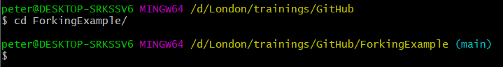
- Let’s see the remote repositories connected to our local repo; will there already be a connection with the original repo?

No: there is only a connection to the fork on our personal GitHub page.
As you can see, this remote repository is called “origin”; this is the default
name, created by Git when you use the command git clone.
It is mentioned twice, because we are allowed to push to and pull (fetch)
from our own remote repository.
- Create a connection with the original repo: go to the GitHub page of that repo,
get the link to that repo by clicking the green
Codebutton. Now go back to Git Bash and enter the commandgit remote add upstream, followed by the link to the original repository:

NB: upstream is the name we give to the original repository; you can give it
any other name if you like, but it is common to call it upstream, so better
to stick with the traditions. upstream uses the same river imagery as fork.
- If we use the command
git remote -vagain, we will see that a new remote connection has been added to our local repository:
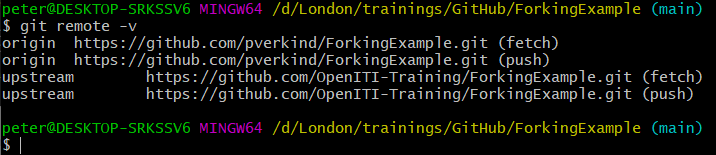
NB: note that upstream is mentioned twice in the list, once for fetch and
once for push. However, if you would try to push to the upstream repo,
you would get an error message. This is because Git does not restrict you
from pushing to that repository, it is GitHub that restricts push access.
- Before making any changes, it is a good idea to pull any new changes other
users of the original repo (
upstream) may have made in the meantime.
If nothing had changed, you will receive the message Already up to date:
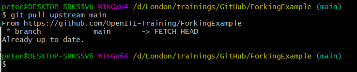
If, however, changes have been made to the upstream repo since you forked it,
or since you last synched your local repo with the upstream repo, Git Bash
will download and list the changes that have been made in the upstream repo:
 It will then display a notification that the
It will then display a notification that the main branch of the repository will be merged
into the main branch of your local repository. This message will be shown
in an editor inside Git Bash; you can adapt the message if you wish, but it is
usually fine to keep the default message and simply close the editor with
the key combination Ctrl and X. The editor will ask whether it has to
save your changes; write Y and hit the Enter key. Hit Enter again to
confirm Git may store this file at the proposed location.
NB: the merging of the two branches is stored in a commit; the message in the editor will function as its commit message.
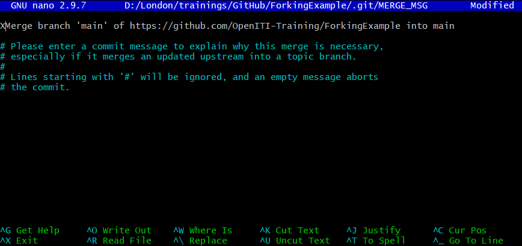 NB: if you have made changes to a file on your own computer, and someone else has meanwhile made changes in the upstream repo to the same line in that same file, this leads to a “merge conflict”: Git cannot decide which change to keep. You will have to resolve this merge conflict by manually selecting which changes to keep: the one you pulled from the OpenITI GitHub page, or the one you made locally. This can be a huge pain. In order to avoid this, always make sure to pull the changes from the upstream repository before you make any change to your local files!
- Now let’s make some changes to our local repository. We will create a new (empty)
file in this example that has our initials as its filename.
You can do that by using the command
touch, followed by the filename:
If you type the command ls to list the content of the working directory,
you will see that it now contains a file with that filename.
- Let’s now commit our changes to Git using the commands
git addandgit commit -m:

- After committing your changes, and before pushing them to GitHub, it is
good practice to pull changes from the
upstreamrepo again (see above):
- Let’s try to push our changes directly to the
upstreamrepo - we already know this is not going to work, but let’s try anyway to see the error message:
 Git tried to push our commit to the server, but GitHub denied us access.
Git tried to push our commit to the server, but GitHub denied us access.
- We have to take the detour of the pull request to publish our changes to
the original repository. First, we push our changes to the remote repository
(
origin) on our personal GitHub page:

- Now we can create the pull request as we have done before: push the
Pull requestsbutton under the name of your fork on GitHub:
- This will bring you to a new page, where you can compare changes between
different forks of the original repository. To create a pull request, make sure
your fork is in the
head repositoryfield, and the original repository from which you forked in thebase repository- the arrow shows the way the data will flow. Then click the greenCreate pull requestbutton.
- Provide a title and description for your pull request and click the green
Create pull requestbutton.

- The owner of the repo you cloned will be informed by email that you have
made a pull request. They will review the changes you made; if they are happy
to integrate them, they will merge you changes into the repository. They may
also choose to comment on your changes and ask you to amend them before they
will accept them. The
Pull requestis not only a security measure, but also an important communication channel on GitHub.
16.10.2.4 Overview of the Forking workflow:
The following images are a graphical representation of the Forking workflow, illustrated by an example drawn from the OpenITI corpus.
Setting up your repositories for the Fork workflow

The full workflow in one image
16.10.3 Comparison of both workflows
| push access | forking - pull requests |
|---|---|
| changes immediately reflected in remote repo | changes only accepted after review |
| no quality control | quality control through review process |
| less overhead: give permission only once | every change must be reviewed |
Both workflows can be combined. For example, in the OpenITI project, the core technical team has such push access to most of the project’s repositories, but external contributors have to fork a repo and make pull requests when they want to contribute texts or metadata to a repo. Thus, the positive aspects of both workflows can be used.
16.11 Solving merge conflicts
As we have seen before, Git tries to merge changes you make in your local repo to the current state of the remote repo you push your changes to, and vice versa.
It is quite smart at doing this; it takes into account at which time each change was made.
However, there are cases in which Git cannot know how to merge two versions of the same file: usually, this happens when two users made different changes to the same line of text in the same file.
This is called a “merge conflict”: Git does not know which of the changes is better, and it will let you decide which change to keep, and which one to discard.
To simulate this, let’s use our HelloWorld repo, and make changes to the same
line in our local repo and in the remote repo (origin).
In the repository on GitHub, click the pencil icon at the top of the README.md document:
Make a small change to the first line of the description. E.g., replace “our training” with “the OpenITI training”.
Write a commit message in the
Commit changesbox at the bottom of the screen and hit the “Commit changes” button.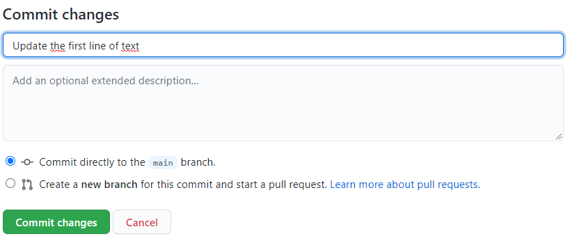
Now, let’s make another change in the README.md file of the clone of this repository we made on our local machine. Open the document in your favourite editor, and make another small change to the same line: e.g., replace “our training” with “the KITAB training”.
Add and commit the file in your local repo:

Now pull the changes from the remote repo (
origin) to your local repo: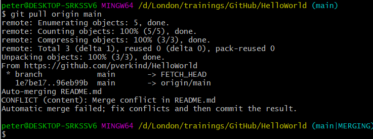
There you have it, a merge conflict… The error message tells you - kind of - what is going on and what you have to do: “Automatic merge failed; fix conflicts and then commit the result.”
NB: notice that the branch indication at the end of the prompt line has changed from
maintomain|MERGING: this is a temporary branch.To fix a merge conflict, open the file for which Git found a merge conflict - in our case,
README.mdin any text editor (e.g., EditPad Pro, Kate). You will notice something strange is going on in the file:
Git has inserted a number of weird characters into our text file. In fact, these characters show us where the merge conflict is located in the text file, and the variants in the two conflicting commits:
<<<<<<<indicates the beginning of the merge conflict, and>>>>>>>its end. Both are followed by a commit ID (commit IDs are usually 40-digit hexadecimal numbers;HEADis an abbreviation for the commit ID that is currently “checked out”, that is, the ID of the current state of the files in your working directory)=======separates both versions of the conflicting line(s)
In order to fix the merge conflict, we can either delete one of the variants, create a combination of both, or replace them by an entirely different string. For this example, we will keep one version, the one from our GitHub repo. Remove the other version and all merge conflict markers and then save the file:
 NB: make sure to remove all the traces of the merge conflict markers!
It is a good idea to use the search function of your editor to search for
repetitions of “>”, “<” and “=” to check if you have not overlooked any.
NB: make sure to remove all the traces of the merge conflict markers!
It is a good idea to use the search function of your editor to search for
repetitions of “>”, “<” and “=” to check if you have not overlooked any.After fixing all merge conflicts in all files Git had trouble merging, we have to create a commit that records that we have solved all merge conflicts. If we first enter the command
git status, we can see that Git is not yet informed that we have solved the merge conflict.Let’s
addandcommittheREADME.mdfile:
Running the
git statuscommand again after adding and committing theREADME.mdfile, we can see the merge conflict is now resolved: gone is the messageboth modified: README.md, and the branch indication in the prompt line went back to(main)from(main|MERGING).To finalize, we should push our changes back to our remote repository (
origin):The message printed after our command
git push origin mainmay be cryptic, but it shows no sign of a merge conflict.
16.12 Further reading
This was only a very basic introduction to Git. There are many good resources around.
- Very first introduction to using Github: https://guides.github.com/activities/hello-world/
- Introduction to using Github from command line: https://towardsdatascience.com/getting-started-with-git-and-github-6fcd0f2d4ac6
- A more technical insight into the guts of Git: http://ftp.newartisans.com/pub/git.from.bottom.up.pdf
- on different workflows using Git: see https://www.atlassian.com/git/tutorials/comparing-workflows